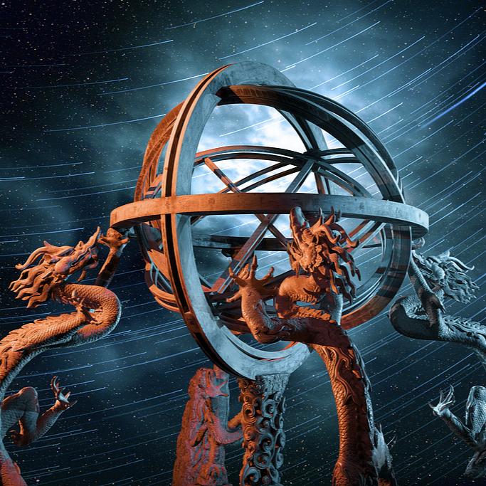
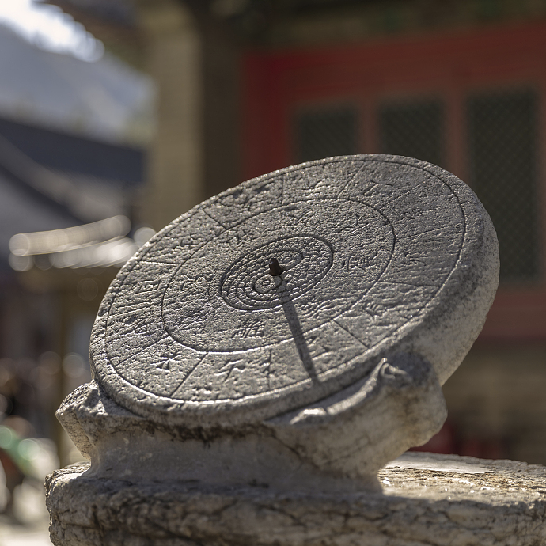
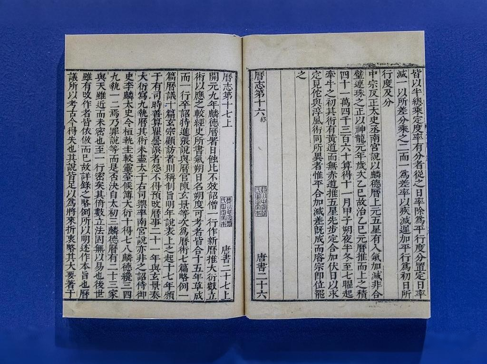
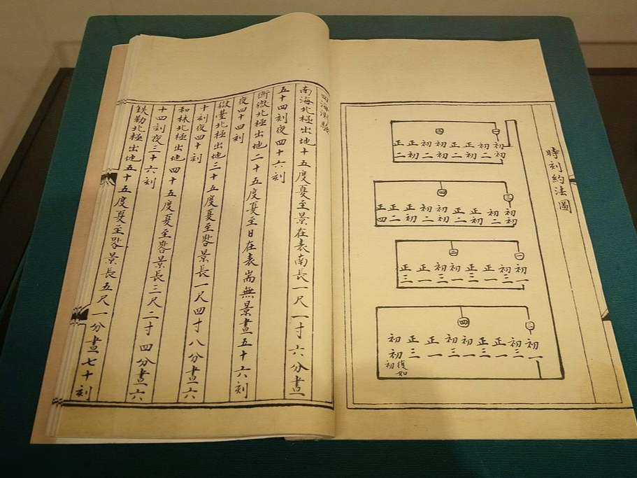

中国古代天文学的辉煌成就
中国古代天文学源远流长，从农历创制到张衡浑天仪、僧一行子午线测量，推动了农业生产和社会发展，并为世界天文学留下宝贵遗产。
中国古代天文仪器
中国古代天文学家发明了许多精密的天文仪器，用于观测天象和制定历法。

浑天仪：张衡的伟大发明
浑天仪是东汉时期张衡发明的天文仪器，可模拟天体运行。它不仅能演示日月星辰的运动，还能预测天文现象，是中国古代天文学的标志成就。

圭表：测量日影的工具
圭表是中国古代用来测量日影长度的重要天文仪器，通过观察日影变化精确确定二十四节气，为农历的制定和农业生产安排提供了科学依据。
简仪：元代天文仪器的巅峰
简仪是元代天文学家郭守敬改进的天文仪器，结构简单但测量精度极高，用于精确测量天体的位置和运动，代表了当时世界天文学的最高水平。
中国古代历法的发展历程


夏历——最早的农历系统
夏历是中国最早的农历系统，以月亮的圆缺周期为基础，结合太阳年的长度，形成了阴阳合历的体系。它不仅用于农业生产，还影响了东亚其他国家的历法制定。
《大衍历》——唐代历法的巅峰
唐代僧一行主持编制的《大衍历》是中国古代历法的代表作之一。它精确计算了日月运行的规律，并首次引入了岁差的概念，对中国乃至世界天文学产生了深远影响。
授时历——元代历法的集大成者
元代郭守敬编制的《授时历》是中国古代最精确的历法之一。它采用了先进的天文观测数据，精确计算了一年的长度为365.2425天，与现代公历几乎一致。
《黄帝历》
传说中中国最早的历法，以365.25日为一年，分一年为四季，已出现闰月概念。虽无实物证据，但《汉书·律历志》有相关记载。
夏历（夏小正）
中国现存最早的阴阳合历体系，以月相周期（朔望月）为主，结合太阳年长度。《夏小正》记载了物候、天象与农事活动的关系，形成"十九年七闰"的置闰方法。
殷历
甲骨文记载的历法系统，首次明确使用干支记日，一个月分"初吉""既生霸""既望""既死霸"四期，年首多设在一月（相当于今农历十一月）。
太初历
中国第一部完整历法，首次将二十四节气纳入历法体系，确立"无中气之月为闰月"的原则。由邓平、落下闳等人编制，测得朔望月为29.530864日（误差仅+0.00027日）。
大明历
祖冲之编制，首次将岁差引入历法计算（45年11个月差1度），测得回归年365.2428天（误差仅+0.0006天），提出391年144闰的置闰周期。
大衍历
僧一行主持编制，创不等间距二次差内插法，计算日月运行误差<1分钟/天。首次提出"日行盈缩"概念（太阳视运动不均匀性），测得黄赤交角为23°40'（与现代值差24'）。
应天历
王朴编制，首创"调日法"分数近似算法，测得朔望月29.530594日（误差-0.000002日）。历法结构严谨，成为宋金时期历法范本，朝鲜《宣明历》即基于此历修订。
授时历
郭守敬集大成之作，测得回归年365.2425天（误差仅+0.0003天），废除上元积年，直接以实测为计算起点。创"弧矢割圆术"处理球面三角问题，精度保持达364年之久。
时宪历
汤若望根据《崇祯历书》改编，中国首部采用西方天文学理论的历法，使用第谷宇宙体系和开普勒椭圆轨道理论，引入"定气注历"法，奠定现代农历基础。
中国古代天文学家的杰出贡献
中国古代涌现了许多杰出的天文学家，他们通过观测天象、发明仪器和制定历法，为天文学的发展作出了不可磨灭的贡献。
中国古代天文学的世界影响
中国古代天文学不仅在国内发挥了重要作用，还对世界天文学的发展产生了深远影响。
3D Motion Graphic

We are opening up our platform and inviting all builders to create the first plugins and widgets for FigJam. Check out our documentation to start building new plugins or republishing your existing Figma plugins for FigJam.
These are just a handful of examples—we have 35 builders who have FigJam plugins already in the works, and we are so excited for you to join them.
- Web Design
- Graphic Design
- UX Research
- Share This Post:
-

-

-

- Project Type: Graphic Design
- Client: Tony Nguyen
- Duration: 2 Weeks
- Task: UI/UX, Frontend
- Budget: $3400